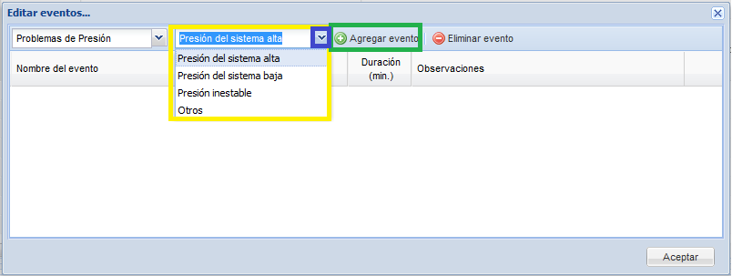
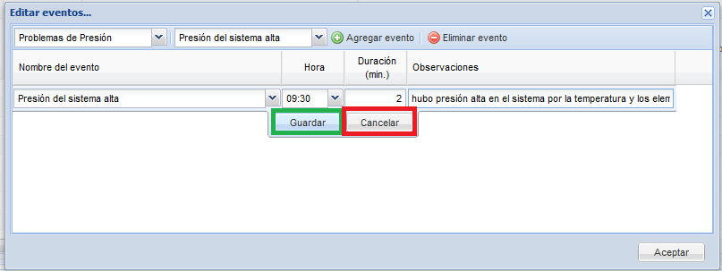

Figura 2. Pantalla de editar eventos selección de categoría.
Una vez seleccionada la categoría,
seleccione de la segunda lista el
evento que desea ingresar y pulse el botón agregar evento.En la figura
3 se muestra donde esta ubicada la segunda lista y se resalta el botón
de agregar eventos.

Figura 3.Pantalla de editar eventos, selección de evento.
Luego de que el usuario agrega el evento debe registrar el detalle de a
que hora ocurrio el evento, cuanto tiempo en minutos duro el
evento, digitar una observación corta que
describa lo que ocurrio y pulsar el botón guardar. En la figura 4 se
muestra un ejemplo de la edición del detalle de un evento. Para una
misma corrida se pueden registrar varios eventos de la misma manera.

Figura 4.Pantalla de edición del detalle del evento.
Eliminar registros de eventos
Para eliminar un evento, seleccione de la lista de eventos el que desea eliminar, y pulse el botón eliminar, usted debe ser consiente de que esta información no se podrá recuperar.